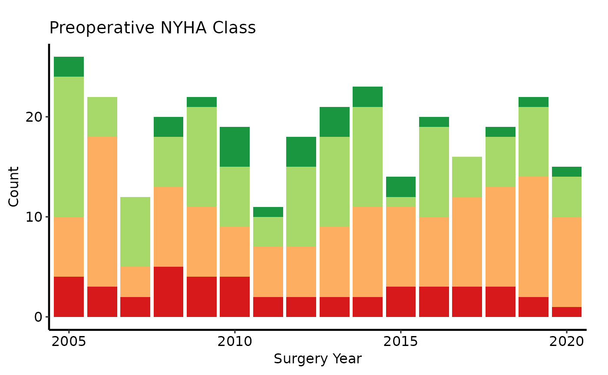
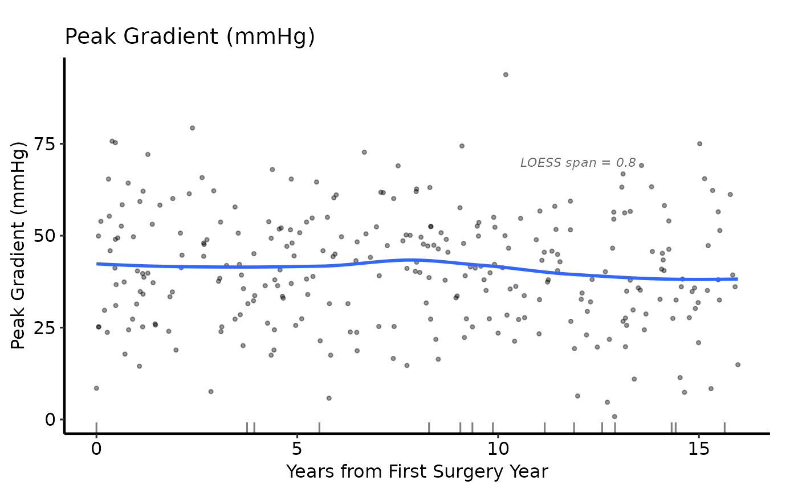

Draws an exploratory data analysis plot for the variable stored in the
hvti_eda object. Variable type (stored in x$meta$var_type)
determines the chart:
Usage
# S3 method for class 'hvti_eda'
plot(x, smooth_method = "loess", smooth_span = 0.8, smooth_se = FALSE, ...)Arguments
- x
An
hvti_edaobject.- smooth_method
Smoothing method for continuous plots, passed to
geom_smooth. Default"loess".- smooth_span
LOESS span. Default
0.8.- smooth_se
Logical; show confidence ribbon around smooth? Default
FALSE.- ...
Ignored; present for S3 consistency.
Value
A bare ggplot object.
Details
- Continuous (
"Cont") Scatter plot with a LOESS smoother overlay and a rug on the x-axis for rows where the outcome is missing.
- Numeric categorical (
"Cat_Num") Stacked (or filled) bar chart with counts (or proportions) per x level.
- Character categorical (
"Cat_Char") Same stacked bar, colouring each string level separately.
Examples
dta <- sample_eda_data(n = 300, seed = 42)
# --- Ordinal categorical: percentage barplot ------------------------------
plot(hvti_eda(dta, x_col = "year", y_col = "nyha",
y_label = "Preoperative NYHA Class")) +
ggplot2::scale_fill_brewer(
palette = "RdYlGn", direction = -1,
labels = c("1" = "I", "2" = "II", "3" = "III", "4" = "IV",
"(Missing)" = "Missing"),
name = "NYHA"
) +
ggplot2::scale_x_discrete(breaks = seq(2005, 2020, 5)) +
ggplot2::labs(x = "Surgery Year", y = "Count") +
hvti_theme("manuscript")

# --- Continuous: annotated -----------------------------------------------
plot(hvti_eda(dta, x_col = "op_years", y_col = "peak_grad",
y_label = "Peak Gradient (mmHg)")) +
ggplot2::scale_colour_manual(values = c("steelblue"), guide = "none") +
ggplot2::scale_x_continuous(breaks = seq(0, 15, 5)) +
ggplot2::labs(x = "Years from First Surgery Year") +
ggplot2::annotate("text", x = 12, y = 70,
label = "LOESS span = 0.8",
size = 3, colour = "grey40", fontface = "italic") +
hvti_theme("manuscript")
